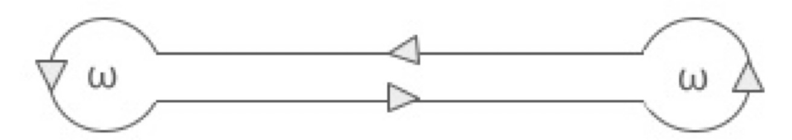

Key exact finite-N statements and the limit reducing the Euler ensemble to quantum pendulums are formally verified in Lean 4 with Mathlib by credited coauthors.
Abstract
We present a theory of decaying turbulence in which the statistics of a classical flow becomes quantum mechanics in loop space. The loop functional plays the role of a wave function, and the Navier-Stokes equation makes it evolve linearly, with the viscosity as Planck constant. Turbulence at infinite Reynolds number is defined by a discretized loop equation on polygons with $N$ sides and a renormalization. It has an exact manifold of decaying solutions, the Euler ensemble; each is a singular point of the deterministic equation, which does not select their weights. We interpret this instability as the source of spontaneous stochasticity: thermal noise only triggers a diffusion of the momentum loop over the Euler states, and neither its amplitude nor the temperature of the fluid enters the statistics. In a stochastic model of this diffusion equal weights are proved to be the attractor. As a fermion trace, the partition function and the vorticity correlations become Gibbs averages of two quantum pendulums with the Mathieu Hamiltonian. The energy spectrum is a chain of explicit quadratures. It falls as $k^{-7/2}$ at large $k$; at $kL=\sqrt{2}$, with $L=\sqrt{\tildeν(t+t_0)}$, its slope diverges as a double logarithm, so the decay at a fixed wave number is singular at a finite time and the vorticity correlation oscillates. At small $k$ there are two solutions, for a quenched and an annealed orientation of the plane of the loop: $k^{-1}\log(1/kL)$ and $k^{-2}/\log(1/kL)$. The energy and its dissipation depend on the size of the system logarithmically in the first and almost linearly in the second, and the energy decays with an index of 1.1-1.2 and about 1.45. The reduction to the quantum pendulum is formally verified in Lean 4 in a forthcoming paper. The theory rests on stated physical hypotheses; its comparison with simulations and experiment is left to a separate paper.
Problem
The work seeks the statistical state of freely decaying turbulence, an analogue of the Gibbs distribution, derived from the Navier–Stokes equation rather than from phenomenology.
Approach
Navier–Stokes is rewritten as a linear loop equation, with viscosity in the role of Planck's constant, and discretized on N-sided polygons. Its exact decaying solutions form the Euler ensemble of star polygons. Equal weights on these states are taken as the only physical hypothesis, and a stochastic model shows equal weights are the attractor. The equal-weight sum is written as a fermion trace and reduced to Gibbs averages of two Mathieu quantum pendulums. The exact finite-N statements and the N→∞ convergence are formally verified in Lean 4 with Mathlib in a companion paper by Jiang et al.

Figure 2: The hairpin loop of the vorticity correlation. The small loops at the two ends are the two area derivatives, which insert the vorticity \omega at the two points; between them the loop is contracted to a thin wire that runs from one point to the other and back.
Results
The energy spectrum is given by explicit quadratures. It falls as k^{-7/2} at large k and has a double-logarithmic slope singularity at kL=√2. At small k there are two regimes, k^{-1}log(1/kL) and k^{-2}/log(1/kL), with energy decay indices of about 1.1–1.2 and 1.45.